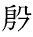
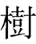
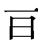
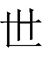
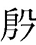
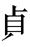
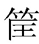
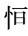
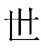

此从毛斧季校宋本[210]录出，



皆缺笔[211]；又有
则袭唐讳。毛所用明本[212]，每页十行，行十七字，目在每卷前，与程本[213]异。注 释
[209] 本篇据手稿编入，原无标题、标点。据鲁迅日记，当写于1918年9月25日前后。
《鲍明远集》，南朝宋文学家鲍照的诗文集。原由南齐虞炎编定，题为《鲍照集》，共十卷；据《隋书·经籍志》注，南朝梁还有一种六卷本。皆失传。后来传世的有《鲍明远集》、《鲍参军集》、《鲍照集》、《鲍氏集》等不同版本。鲁迅校勘所用底本为明代新安汪士贤校本，十卷。鲍照（约414—466），字明远，东海（治今山东郯城北）人。宋孝武帝时官太子博士兼中书舍人，后为临海王刘子顼前军参军。
[210] 毛斧季（1640—？） 名扆，字斧季，明末清初常熟（今属江苏）人，藏书家、版本学家。著有《汲古阁珍藏秘书图目》等。毛氏校宋本《鲍氏集》共十卷，校勘后记和识语中说：康熙丙辰（1676）“借吴趋友人宋本比较一过”，宋本“每幅廿行，每行十六字，小字不等”。
[211] 缺笔 唐代开始的一种避讳方式，在书写和镌刻本朝皇帝或尊长的名字时，一般省略最末一笔。本文中的




，是避宋太祖赵匡胤父弘殷、始祖玄朗、英宗父允讓、仁宗赵祯、太祖匡胤、英宗赵曙（与树同音）、钦宗赵桓、真宗赵恒的名讳。
，是避唐太宗李世民的名讳。[212] 毛斧季校勘所用的底本，是明代正德庚午（1510）朱应登的刊本。
[213] 程本 指明代程荣的刻本，十卷，目在前，每页九行，行二十字，前有虞炎序，后有朱应登跋。（见《汉魏六朝诸家文集二十二种》）程荣，字伯仁，安徽歙县人。曾辑刊《汉魏丛书》三十八种。